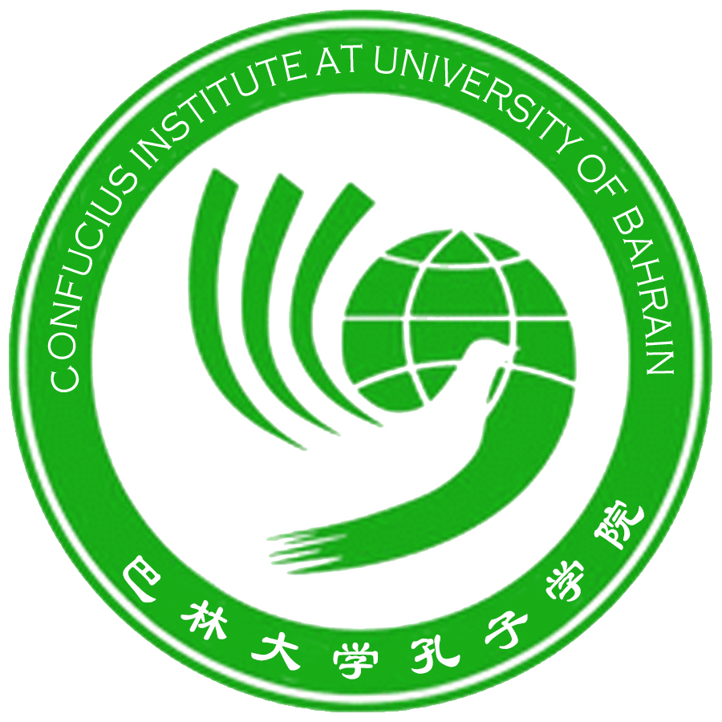
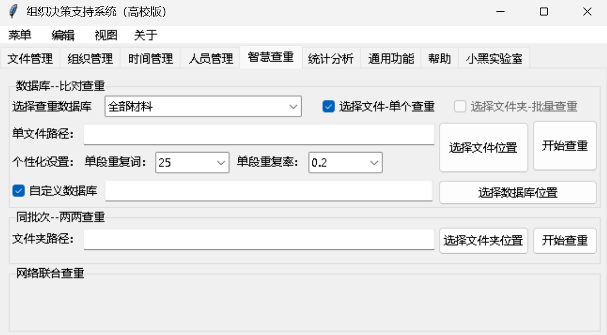
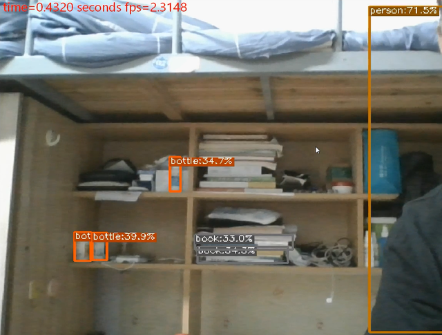
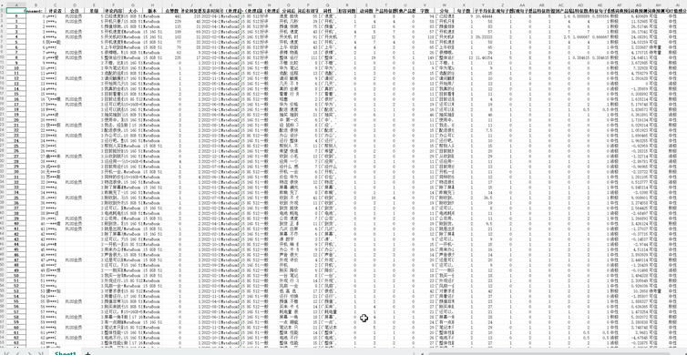

Yongjian Huang （黄永健）
2002.01.27 • Guangdong, China
Email: hongwu@shu.edu.cn / hongwu2023@163.com
Homepage: hongwu122.github.io
Bio. A young, motivated, and self-driven researcher seeking opportunities to contribute to cutting-edge research in operations research and optimization, with a strong focus on real decision-making problems, artificial intelligence and computational modeling. I am currently pursuing a Master’s degree in Management Science and Engineering at Shanghai University under the supervision of Prof. Zhou, and expect to graduate in Spring 2026. Previously, I obtained my Bachelor’s degree from the University of South China advised by Prof. Xie.


Education
- Shanghai University, 2023–2026 (expected)
- Master of Management Science and Engineering (Big Data and Business AI track)
- Master Supervisor: Prof. Jian Zhou
- University of South China, 2019–2023
- Bachelor of Business Administration (Enterprise Management track)
- Bachelor Supervisor: Prof. Tian Xie
Work Experience
-
Chinese Language Volunteer Teacher,

Confucius Institute at University of Bahrain
(Aug 2024 – Sep 2025)
University of Bahrain
(Aug 2024 – Sep 2025)
- One year of international Chinese teaching experience in Bahrain.
- Taught and communicated with students in both English and Arabic to support their learning.
- Organized and hosted the First Arabian Region Chinese Education Symposium 2024.
- Responsible for HSK examination administration.
- Student Union, University of South China (Nov 2021 – Jun 2023) – Senior Member / Deputy Director / Director
- Demonstrated strong hands-on skills in problem-solving and process innovation.
- Developed Python-based office automation software to streamline tasks and address key challenges.
- Received recognition from the college chairman and student advisors for innovative solutions.
Academic Experience
- Academic Service (Reviewer)
- Soft Computing
- Others: Transportation Research Part E, Computers and Operations Research, International Journal of General Systems, PLOS ONE, etc.
- 9th IET SCS-2025 SYMPOSIUM, Bahrain
- Adaptive Urban Congestion Modeling and Zonal Signal Control Based on Taxi Trajectory Data, Accepted
- Urban Mobility Demand Forecasting with a Hybrid Attention-XGBoost Model: A Case Study on NYC Taxi Data, Accepted
- National College Innovation & Entrepreneurship Training Program (2021–2023) – Principal Investigator
- Concluded a national-level research project on cross-border nuclear-related online public opinion and control strategies.
- Led the development of an intelligent decision support system for student union.
- Applied for seven software copyrights (including one for the above system), implemented in college student work.
- The products has been promoted for use by organizations in multiple regions of China.
- National College Innovation & Entrepreneurship Training Program (2022–2024) – Core Member
- Researched an e-commerce-based industrial ecosystem for post-pandemic poverty alleviation (case: Tuliu Group’s digital rural revitalization).
- Led a project that won the Second Prize in the 9th "Challenge Cup" academic competition at the University of South China.
Publications
- Xie, T.*, Huang, Y. J.*, & Chen, W. F. (2025). Multi-dimensional assignment model and its algorithm for multi-features decision-making problems. Expert Systems with Applications, 270, 126369. DOI: 10.1016/j.eswa.2024.126369 (Q1 TOP SCI, IF:7.5)
- Huang, Y. J., Huo, S.*, & Dong, Y. (2025). Exploring the role of AI in smart grids: a 20-year bibliometric-based overview. International Journal of General Systems, 1–32. DOI: 10.1080/03081079.2025.2547187 (Q2 SCI)
- Huang, Y. J., Qader, M. R., Zhou, J.*, & Zhang, X. (2025). Prediction and path planning framework of X city’s carbon emissions based on long short-term memory network model. Polish Journal of Environmental Studies (Online First). DOI: 10.15244/pjoes/199609
- Xie, T., Dai, G. Y., Chen, W. F., Yang, C. P., Huang, Y. J., & Wei, Y. Y.* (2025). Pandemic triggered emergency supply chain management innovations: a scientometric analysis based on bibliometrics and dynamic topic models. Disaster Medicine and Public Health Preparedness, 19, e88. DOI: 10.1017/dmp.2025.88
- Huang, Y. J.(Presenter), & Huo, S. C.(2025). Urban mobility demand forecasting with a hybrid attention-XGBoost model: A case study on NYC taxi data. Accepted for publication in the Proceedings of the 9th IET Smart Cities Symposium (IET SCS 2025), Bahrain.
- Li, X. L., Huo, S. C.(Presenter), & Huang, Y. J.(2025). Adaptive urban congestion modeling and zonal signal control based on taxi trajectory data. Accepted for publication in the Proceedings of the 9th IET Smart Cities Symposium (IET SCS 2025), Bahrain.
- Who Holds the Reins of Power? – Platforms Challenging Traditional Offline Transactions (Working Paper)
- Two-phase optimization methods for project scheduling problem with uncertain activity durations (Working Paper)
- Timely and equitably allocation of medical resources considering secondary mortality under public health emergency (Working Paper)
Achievements
- Apr 2022 – May 2023 — Granted 7 Software Copyrights:
- Smart Decision Support System for University Student Union, Huang, Y. J.
- Facial Recognition-Based Attendance System for University Student, Huang, Y. J.
- Automated Office System for Grassroots Organization, Huang, Y. J., Li Jingjing
- Smart Materials Management Services System for Organization Members, Huang, Y. J., Li Jingjing
- Intelligent Cloud Platform for Organization Management, Liu Liangbai, Huang, Y. J.
- Data Analysis Platform for Organization Statistics, Liu Liangbai, Huang, Y. J.
- Smart Decision Support System for Grassroots Organization, Liu Liangbai, Huang, Y. J.
Honors
- Total Awards: 20+ honors across international, national, provincial, and university levels
- Leadership Roles: Core leader in 10+ competitions and innovation projects
- Outstanding Technology and Innovation, Cross-Cultural Achievements
International & National Level
- Sep 2025 · National Scholarship Award, PRC (2024–2025 Academic Year)
- Sep 2025 · "China-Bahrain Cultural Exchange Contributor", Embassy of the People's Republic of China in the Kingdom of Bahrain
- Aug 2024 · Excellence Award, 3rd DingTalk Cup Big Data Challenge (Team Leader)
- Dec 2023 · Second Prize, 20th Huawei Cup China Postgraduate Mathematical Contest in Modeling (Team Leader)
- May 2021 · Third Prize, 11th CP Group Cup National College Student Market Research & Analysis Competition, "Endless Love, Midea Forever": Research Report on Consumer Willingness and Behavior of Guangzhou "Midea" Pet Cleaning Products (Core Leader)
Provincial & Regional Level
- May 2023 · Outstanding Graduate in Innovation & Entrepreneurship, Hunan Province
- Sep 2021 · Third Prize, 7th Hunan Province “Internet+” College Student Innovation & Entrepreneurship Competition, Pioneer: China's first AI referee robot for speed measurement in track and field events (Deputy Leader)
- Apr 2021 · Second Prize, 7th National College Student Engineering Training Comprehensive Ability Competition, Virtual Simulation Track, Enterprise Operation Simulation Track (Core Leader)
- Apr 2021 · First Prize, 11th CP Group Cup Hunan Province Market Research & Analysis Competition, "Endless Love, Midea Forever": Research Report on Consumer Willingness and Behavior of Guangzhou "Midea" Pet Cleaning Products (Core Leader)
University & Institutional Level
- Sep 2025 · First-Class Scholarship, Shanghai University (2024–2025 Academic Year)
- Sep 2025 · Outstanding Achievements in Global Education Leadership, University of Bahrain
- Apr 2025 · President’s e-Learning Innovation Award, University of Bahrain
- Mar 2025 · Technology Star Award, Confucius Institute at the University of Bahrain
- Sep 2024 · Second-Class Scholarship, Shanghai University (2023–2024 Academic Year)
- Dec 2022 · Third-Class Scholarship for Academic Excellence, University of South China (2021–2022 Academic Year)
- May 2022 · Top 10 Innovation & Entrepreneurship Pioneers, University of South China
- Mar 2022 · First Prize, “Ancient Rhyme, Modern Elegance” Poetry Competition, University of South China
- Nov 2021 · First Prize, 7th University of South China “Internet+” Innovation & Entrepreneurship Competition, Pioneer: China's first AI referee robot for speed measurement in track and field events (Deputy Leader)
- Nov 2021 · Second Prize, 9th University of South China “Internet+” Innovation & Entrepreneurship Competition, Red Xiaoxiang - A leading one-stop smart organization comprehensive service provider in China (Team Leader)
- May 2021 · Outstanding Youth League Cadre Award, University of South China
- May 2021 · Third Prize & Best Creativity Award, 11th University of South China E-Commerce “Innovation, Creativity & Entrepreneurship” Challenge, "Stay With Me" Pet Boarding Center Project Plan (Core Leader)
- Mar 2021 · Second Prize, 9th University of South China Challenge Cup Academic & Technological Works Competition, A Survey Study on the Construction of Industrial Ecology Based on E-commerce Poverty Alleviation: A Case Study of Tuliu Group's Information-based Fight Against the Epidemic to Assist Farmers (Team Leader)
- Nov 2019 · First Prize, University of South China Campus Contest, National Youth Model CPPCC Proposal Competition
- Nov 2019 · Third Prize, Calligraphy Category, University of South China Freshmen Talent Competition
Training & Certifications
Language:
- English (IELTS Overall Band Score: 6.5, Writing band: 7.5); Mandarin (National Proficiency Test of Putonghua level 2 grade B); Arabic; Cantonese; Teochew
Technical Certification:
- National Computer Rank Examination Level 2 (NCRE, MS Office)
Professional Training Programs:
- Nov 2, 2024 – Mar 8, 2025 — 2024–2025 Arabic Language Online Training Program for International Chinese Education Volunteer Teachers,Education and Training Center & Beijing Foreign Studies University (64 class hours, beginner-level Arabic language and cultural knowledge training)
- May 6 – June 7, 2024 — Pre-Service Training for International Chinese Education Volunteers (Phase 4), Center for Language Education and Cooperation, Ministry of Education & Xi'an International Studies University
- May 11 – May 29, 2021 — Entrepreneurship & Innovation Simulation Training Camp (Phase 2), Beijing Myooun Campus Research Institute, with the project “Huiyan Technology: Precision Track Measurement System Based on 5G and OpenCV Image Recognition” (108 class hours)
- Dec 2020 – Jul 2021 — University Student Leadership Training Program (Phase 1), “Hunan Qingma Online” Platform
- Oct 21 – Nov 8, 2020 — Entrepreneurship Simulation Training, Hunan Province
- Jul 18 – Jul 20, 2018 — Volunteer Leadership Training Program (Phase 1), Shanwei City
- Jul 17 – Jul 21, 2017 — Guangdong Provincial High School Student Leadership Training Camp (Phase 1), Guangdong Province
Skills
- Python & Operations Research Modeling — 6 years of hands-on experience in developing optimization models and algorithms for resource allocation and scheduling problems, directly applied in published research (e.g., multi-dimensional assignment models in Expert Systems with Applications).
- Web Scraping — Proficient in using
requests,BeautifulSoup, andScrapyfor large-scale data collection to support research data acquisition. - Automated Data Processing — Designed Python scripts for batch processing of large datasets, significantly improving workflow efficiency in organizational operations; related work contributed to 7 registered software copyrights (e.g., Organization DSS).
- Data Analysis & Visualization — Experienced in using
Pandas,NumPy, andMatplotlibto analyze research data and create visualizations for publications and competitions (e.g., “Huawei Cup” Mathematical Modeling Contest). - Computer Vision & Deep Learning — Self-directed projects in image recognition and object detection using
OpenCV,YOLO,PyTorch, andTensorFlow, with applications in face recognition and related tasks. - Statistical Analysis — Skilled in applying
SPSSandEViewsfor statistical analysis and econometric modeling, with practical experience from national-level research competitions. - Bibliometric Analysis — Familiar with
VOSviewerandCiteSpacefor conducting bibliometric studies, including research trend mapping and citation network analysis, as utilized in published papers. - Scientific Visualization — Proficient in creating diagrams with
Visioand publication-quality charts withMatplotlibfor academic papers and project reports. - Office & Typesetting Tools — Skilled in
LaTeXfor typesetting,CorelDRAWfor graphic design, andWord,Excel,PowerPointfor documentation and presentations. - Design & Media — Experienced in image editing with
Photoshop (PS)and video production withPremiere (PR), supporting content creation for academic and volunteer activities.
Projects
Since 2019, I have been engaged in a diverse range of projects, many of which are open-sourced on my GitHub or protected by software copyrights. My work spans smart office automation, artificial intelligence, data visualization, and large language models (LLMs).
Beyond developing my own projects, I actively explore and draw inspiration from open-source projects by others. For example, I studied the LiveTalking digital human interaction system and KouriChat (an LLM-powered emotional companion chatbot). I have also experimented with deep learning frameworks like PyTorch, applying ResNet-101 and GPT models to build an AI that plays the video game Honor of Kings. Additionally, I developed computer vision-based intelligent transportation applications, leveraging object detection and scene understanding to enhance traffic analysis and safety.
Smart Organization DSS
An intelligent Organization Decision Support System developed during my undergraduate studies as part of a national innovation program (supervised by Prof. Tian Xie). This system significantly improved the efficiency of student union work, introducing an innovative model for managing organization activities. It received recognition and was featured by the dean and the official media.

Computer Vision (YOLO Object Detection)
In 2021, I ventured into computer vision by experimenting with an open-source object detection project based on the YOLO algorithm. This hands-on project marked my first foray into computer vision, where I implemented and fine-tuned a YOLO model to detect and classify objects in real-world images.

Natural Language Processing (NLP)
Developed an NLP-based sentiment analysis system by collecting product review data from e-commerce platforms using Python web crawlers. Leveraged models such as BERT, SVM, and LSTM to analyze sentiment polarity and evaluate customer feedback trends. This project enhanced my expertise in text mining, deep learning, and model evaluation.

Reinforcement Learning in AI (RL)
A reinforcement learning system was built using PyTorch and scrcpy to train an AI agent playing Honor of Kings.
Applied policy gradient methods and deep reinforcement learning techniques to optimize real-time game strategies and decision-making.
Self-Recommendation
Who Am I: A Long-Term-Oriented Doer
I define myself as an optimistic and resilient individual who thrives on challenges and long-term goals. Under the continuous guidance of Prof. Tian Xie, I spent four years from my undergraduate studies to complete and publish my first Top SCI paper. This journey strengthened my belief that meaningful research requires patience, persistence, and the courage to iterate repeatedly. For me, progress in science comes not from short bursts of effort but from sustained refinement and long-term dedication.
When Curiosity Led to Idea: From Concepts to Publications
My research journey began in 2020 during my sophomore year, when I first became involved in assignment problem solving under the mentorship of Prof. Tian Xie. Since then, I have navigated the entire research pipeline — from formulating research questions and identifying knowledge gaps, to designing experiments, writing manuscripts, submitting to journals, and responding to reviewer feedback. I have learned how to transform raw results into clear visualizations and compelling narratives, participated in the proposal preparation of National Natural Science Foundation of China (NSFC), MOE (Ministry of Education) Humanities and Social Sciences Research Project (Shanghai), and Shanghai Philosophy and Social Science Planning Project, and conducted peer reviews for SCI-indexed journals.
How I Conduct Research: Problem-Driven, Code-Enhanced
My research philosophy combines problem-orientation with data-driven solutions. During my undergraduate years, I developed a habit of identifying inefficiencies and designing highly efficient solutions — a mindset that now drives my academic work. In my graduate studies, I integrate Python, optimization algorithms, and computational modeling to tackle complex issues such as scheduling, and resource allocation. This ability to transform real-world scenarios into rigorous research questions allows me to consistently generate innovative insights across multiple domains.
Where I Grew: Cross-Cultural Experience in Bahrain
Thanks to the support of Prof. Jian Zhou, I spent a year living, studying and working at the Confucius Institute of University of Bahrain, where I managed to continue my research while expanding my experience in international education. Engaging with Arabic-speaking students and local institutions sharpened my ability to translate abstract methods into practical solutions, while also broadening my perspective on how institutional, cultural, and data environments influence problem-solving strategies. This experience nurtured an increasingly global perspective, allowing me to think beyond a single context and to identify insights from cross-regional comparisons.
What I Bring: Creativity and “Find-and-Fix” Capability
I bring a unique blend of creativity and practical problem-solving skills. I have no desire to limit myself to the management field; instead, I am intentionally learning advanced computer technologies, optimizing them, and integrating these optimized solutions into traditional management tools. Whether automating data collection pipelines, streamlining workflows, or debugging processes, I continually refine systems through small, high-impact improvements. My goal is to ensure that my research not only advances theory but also generates solutions that work in real-world contexts. While I respect foundational theories, I am deeply passionate about applying them to address complex practical problems — because I believe this is where research creates its greatest value.